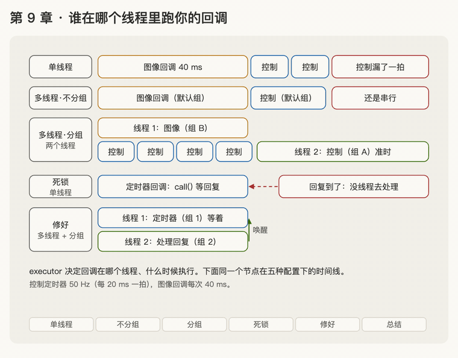
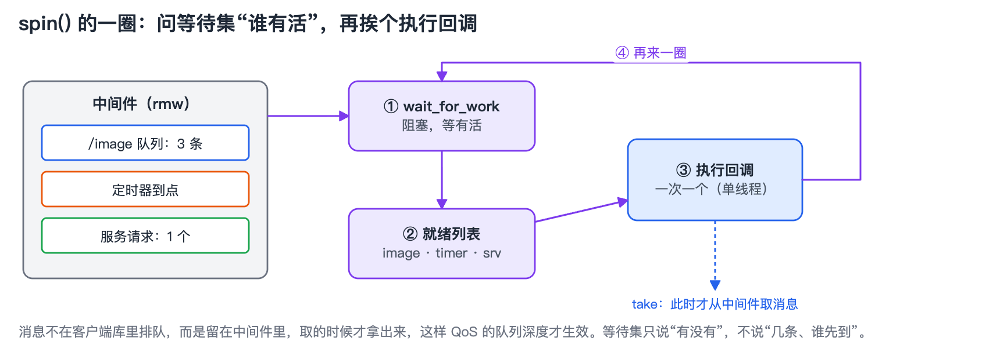
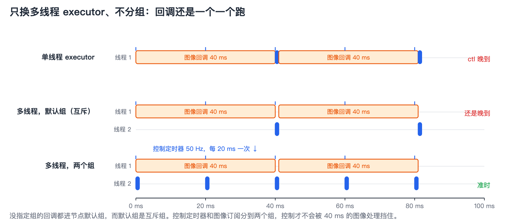

第 9 章 · Executor 与回调组：谁在什么时候、哪个线程里跑你的回调
本地运行
git clone https://github.com/wikieden/ros2-from-scratch
cd ros2-from-scratch/code/notebooks
pip install jupyterlab torch numpy
jupyter lab ch09_executor.ipynb也可以下载后直接用 VS Code 打开 .ipynb 运行。需要 GPU 的章节在 Colab 里选「代码执行程序 → 更改运行时类型 → GPU」。
本章回答：一个慢回调为什么会让别的回调全都卡住？多线程 executor 加上了为什么还是不并行？回调组是什么、怎么分组？第 5 章那个服务死锁到底怎么正确地修？
讲解日期：2026-11-13 · 上一章：第 8 章 中间件、发现与网络 · 下一章：第 10 章 组合、进程内通信与零拷贝
对应原文：ros2_documentation/source/ROS-Framework/client-libraries/About-Executors/About-Executors.rst；ros2_documentation/source/ROS-Framework/nodes/Working-with-nodes/Using-callback-groups.rst（路径相对ros2/materials/）
对应 study-plan 阶段 C4，动手里程碑 R-M4 前半。
本章缩写：FIFO = First In, First Out（先进 / 先出：排队顺序）；CPU = Central Processing Unit（中央 / 处理 / 单元）；GIL = Global Interpreter Lock（全局 / 解释器 / 锁：Python 同一时刻只让一个线程跑 Python 代码的锁）；CBG = Callback Group（回调组）。全部缩写见 附录 · 缩写与术语表
本章先看总图，再分 3 步：
| 步 | 内容 | 状态 |
|---|---|---|
| 0 | 总图：同一组回调在不同 executor / 回调组下的时间线 | ✅ |
| 1 | executor 怎么调度：等待集、轮转、三种 executor | ✅ |
| 2 | 回调组：互斥组、可重入组、默认组 | ✅ |
| 3 | 实战：修好服务死锁，给控制回路单独线程 | ✅ |
讲解
总图 · 线程时间线

可交互版：animations/09-executor-timeline.html（内置浏览器：http://localhost:8340/09-executor-timeline.html）。
类比：executor 是餐厅的服务员团队，回调是各桌的需求。单线程 executor = 只有一个服务员，一桌没招呼完，别桌只能等。多线程 executor = 好几个服务员，但回调组规定了哪些桌只能由一个人按顺序服务（互斥组），哪些桌可以同时派人（可重入组）。
第 1 步 · executor 怎么调度
依据：ROS-Framework/client-libraries/About-Executors/About-Executors.rst（下称"executor 文档"）。
rclpy.spin(node) 背后：其实是创建一个单线程 executor、把节点加进去、再 spin()（executor 文档第一段）。spin() 让当前线程不停地向 rcl 和中间件询问"有没有新消息、定时器到了没有"，有就调对应回调，直到节点关闭。
消息存在哪？ 新消息不在客户端库里排队，而是留在中间件里，等回调真要处理时才取出来。这样中间件的 QoS 设置（比如队列深度）才能生效。这是和 ROS 1 的关键区别（executor 文档 Basic 一节）。
等待集只告诉"有没有"，不告诉"有几条、谁先到"。 所以回调处理得快时，executor 基本按先来后到（FIFO）处理；回调一慢，消息在下层堆起来，executor 就按轮转（round-robin）挨个话题处理，而不是严格按到达顺序（executor 文档 Scheduling semantics）。
一个 executor 可以管多个节点：executor.add_node(node1)、add_node(node2)……单线程时，一个线程服务所有这些节点的回调。
三种 executor（rclcpp；rclpy 有对应的单线程和多线程版本）：
| executor | 线程 | 特点 |
|---|---|---|
| SingleThreadedExecutor | 1 | 默认；一次只跑一个回调 |
| MultiThreadedExecutor | 可配置多个 | 线程池；能不能并行由回调组决定 |
| EventsCBGExecutor（Lyrical 新增） | 1 或多个 | 不轮询等待集，而是"谁就绪谁进先进先出事件队列"；比前两种省 10%–15% CPU；支持仿真时间；可直接替换多线程 executor |
EventsCBGExecutor 的一个提醒：事件队列没有上限，进程过载时队列会无限增长（executor 文档对应一节的 Note）。
为什么默认 executor 不适合硬实时（executor 文档 Outlook）：调度规则复杂难分析；高优先级回调可能被低优先级回调挡住（优先级反转）；不能显式控制回调执行顺序；CPU 和内存开销不小。真正的实时控制回路通常放在 ros2_control 里（第 15 章）。

图 9-1 · spin() 的一圈：等待集说“谁有活”，再一次执行一个回调；消息到要处理时才从中间件取出来。
第 2 步 · 回调组
依据：executor 文档 Callback groups 一节、ROS-Framework/nodes/Working-with-nodes/Using-callback-groups.rst（下称"回调组指南"）。
两种回调组：
| 类型 | 规则 | 类比 |
|---|---|---|
| 互斥组（MutuallyExclusiveCallbackGroup） | 组内回调不能同时执行 | 一个服务员负责这几桌，一次只服务一桌 |
| 可重入组（ReentrantCallbackGroup） | 组内回调可以同时执行，同一个回调也可以同时跑多份 | 这几桌随便派几个服务员 |
- 不同组之间的回调总是可以并行（在多线程 executor 下）。
- 没指定组的回调都进节点的默认组，默认组是互斥组。所以：只换成多线程 executor、不分组，回调还是一个一个跑。这是最常见的误解。
- 回调组对象要存住（比如存成
self.cb_group），否则 executor 触发不了其中的回调（executor 文档）。
怎么用（Python）：
from rclpy.callback_groups import MutuallyExclusiveCallbackGroup, ReentrantCallbackGroup
from rclpy.executors import MultiThreadedExecutor
self.control_group = MutuallyExclusiveCallbackGroup()
self.io_group = ReentrantCallbackGroup()
self.timer = self.create_timer(0.02, self.control_step, callback_group=self.control_group)
self.sub = self.create_subscription(Image, 'image', self.on_image, qos_profile_sensor_data,
callback_group=self.io_group)
executor = MultiThreadedExecutor(num_threads=4)
executor.add_node(node)
executor.spin()
分组原则（回调组指南的 guidelines）：
- 一个回调自己和自己能并行吗？能 → 可重入组；不能 → 互斥组。
- 两个回调永远不能同时跑（比如都改同一个成员变量又没加锁）→ 放进同一个互斥组。
- 两个回调需要并行 → 放进不同的组（或同一个可重入组）。
Python 的特别提醒：Python 有全局解释器锁（GIL），多个线程同一时刻只能有一个在执行 Python 代码。多线程 executor 在 Python 里主要解决等待（等服务回复、等 I/O）时的互相阻塞，而不是把计算变快。计算密集的部分（比如模型推理）放在 C++ 或 GPU 上。

图 9-2 · 只换多线程 executor 不分组，回调仍一个一个跑；控制定时器和图像订阅分到两个组，控制才准时。
第 3 步 · 实战
修好第 5 章的服务死锁。 死锁原因：定时器回调里同步调用服务，executor 唯一的线程卡在这个回调里，没人去取回复。修法（回调组指南的核心例子）：
self.client_group = MutuallyExclusiveCallbackGroup()
self.timer_group = MutuallyExclusiveCallbackGroup()
self.cli = self.create_client(AddTwoInts, 'add_two_ints', callback_group=self.client_group)
self.timer = self.create_timer(1.0, self.timer_cb, callback_group=self.timer_group)
def timer_cb(self):
result = self.cli.call(req) # 现在可以了：回复由另一个线程在 client_group 里处理
再用 MultiThreadedExecutor 去 spin。定时器和客户端在不同的组，一个线程卡在定时器回调里等，另一个线程去处理客户端收到的回复。当然，能用 call_async 就别用 call。
给控制回路一个"专用线程"。 一个节点同时有 50 Hz 的控制定时器和 30 Hz 的图像订阅（图像处理很慢）。单线程时，图像回调一跑 40 ms，控制回路就漏拍。做法：
- 控制定时器放一个互斥组，图像订阅放另一个组，用多线程 executor；
- 更进一步（C++）：用
add_callback_group把控制组交给单独的 executor，跑在单独的线程上，再用操作系统调度器给这个线程更高优先级（executor 文档 Callback groups 一节末尾；示例包examples_rclcpp_cbg_executor）。
动作服务端也一样：第 6 章 execute_callback 里 time.sleep(1) 会占住线程。把动作服务端放可重入组 + 多线程 executor，执行期间取消请求、新目标才能及时处理。
和本仓库的连接：VLA 策略节点的典型结构正是"慢的推理 + 快的执行"：推理回调几十到几百毫秒一次，动作块插值发给控制器要 50 Hz 以上。两者必须分组、分线程，否则推理一卡，机器人就停顿（VLA 讲义里实时分块 RTC 要解决的也是这个问题，R-M10 会做）。
练习与作答记录
练习 9-1（第 1 步）：一个节点有两个订阅：A 的回调每次 200 ms，B 的消息 100 Hz 到达、回调 1 ms。用单线程 executor，B 的回调实际能跑多少 Hz？为什么？
- 作答：（待作答）
练习 9-2（第 2 步）：你把 executor 换成了 MultiThreadedExecutor(num_threads=8)，但没建任何回调组。练习 9-1 的问题解决了吗？为什么？
- 作答：（待作答）
练习 9-3（第 2 步）：两个订阅回调都会修改同一个列表 self.buffer，你又希望它们和定时器并行。怎么分组？
- 作答：（待作答）
口诀
- spin：spin 就是单线程 executor；消息留在中间件，等回调来取。
- 调度：快时先来后到，慢时轮转；一个慢回调拖累全节点。
- 回调组：互斥组一个一个来，可重入组随便并行；不同组总能并行；默认组是互斥组。
- 多线程不分组 = 还是串行；同步等待和被等待的回调放不同组。
本章复习卡片编号
R24–R25，见 ../review.md。
附录 · 延伸阅读
留给以后深入学习用，不影响本章主线。★ 是建议先读的。
materials/指ros2/materials/；不带前缀的路径在materials/ros2_documentation/source/下（design/、ecosystem/开头的在materials/下）；...表示省略了和上一条相同的目录。
推荐阅读
| 读什么 | 读哪里 | 读它为了什么 |
|---|---|---|
★ About-Executors.rst |
materials/ros2_documentation/source/ROS-Framework/client-libraries/About-Executors/About-Executors.rst |
调度语义、三种 executor、回调组、实时局限（本章主要依据）。 |
★ Using-callback-groups.rst |
ROS-Framework/nodes/Working-with-nodes/Using-callback-groups.rst |
分组原则和死锁例子。 |
Sync-Vs-Async.rst |
ROS-Framework/interfaces/services/Working-with-services/Sync-Vs-Async.rst |
同步调用与死锁（第 5 章）。 |
Writing-An-Async-Node-With-Asyncio-Python.rst |
ROS-Framework/nodes/Working-with-nodes/Writing-An-Async-Node-With-Asyncio-Python.rst |
Lyrical 的 AsyncNode。 |
Release-Lyrical-Luth.rst |
Releases/Release-Lyrical-Luth.rst "Callback Group Events executor" 一节；组件容器可用 --executor-type 选 executor。 |
— |
| 论文 | Casini, Blass, Lütkebohle, Brandenburg, "Response-Time Analysis of ROS 2 Processing Chains under Reservation-Based Scheduling", ECRTS 2019（executor 文档引用，首次分析 ROS 2 executor 的调度语义）。 | — |
| 视频 | Michael Pöhnl et al., "ROS 2 Executor: How to make it efficient, real-time and deterministic?"（ROS World 2021）；Ralph Lange, "Advanced Execution Management with ROS 2"（ROS-Industrial Conference 2020）。 | — |
120_realtime_background.md |
materials/design/articles/120_realtime_background.md、121_realtime_proposal.md |
实时背景（第 15 章再读）。 |
数学原理
- 负载率：每秒要干的活 = 频率 × 每次耗时；超过 1（比如 30 Hz × 40 ms = 1.2）单线程注定跟不上。
公式清单
| 公式 / 规则 |
|---|
| 同一互斥组：一次一个；不同组：可以并行（要多线程 executor） |
代码对照：把本章的数字用代码算一遍
纯 Python 模拟，不需要 ROS 2（原因见第 1 章这一节）。代码在仓库本地
ros2/solutions/chapter-code/ch09_executor.py，配套测试tests/test_ch06_10.py；同名 notebook 在notebooks/ch09_executor.ipynb（讲解和代码放在一起，一格一格跑）。Mac 上直接能跑：
bash cd ros2/solutions/chapter-code uv run python ch09_executor.py # 一步一步打印 uv run pytest tests/test_ch06_10.py
讲义 ↔ 代码：
| 讲义 | 规则 / 数字 | 写法 | 跑出来 |
|---|---|---|---|
| 第 3 步 单线程 | 一个线程、默认组，图像回调 40 ms | simulate(single, threads=1) |
控制跑 25 次、漏 23 拍 |
| 第 3 步 分组 | 控制一组、图像一组，两个线程 | simulate(grouped, threads=2) |
控制跑 49 次、漏 0 拍、晚 0 ms |
关键几行：
for c in sorted(callbacks, key=lambda c: not c.is_timer): # 定时器先看
if len(busy) >= threads: break # 没有空闲线程
if any(g == c.group for _, g in busy): continue # 同一互斥组正有人在跑
busy.append((t + c.cost_ms, c.group)) # 占住一个线程 cost_ms 毫秒
代码里才看得到的 4 件事：
- 为什么不用真线程：真 Python 线程受 GIL 和系统调度影响，每次结果不同；按毫秒推进的模拟每次都一样，适合核对。
- "漏拍"的定义：50 Hz 定时器下一拍到点时上一拍还没跑，就记一次漏拍，晚了的那拍不补发——rclpy 的定时器也是这样。
- 图像只留最新一张：相当于订阅用 Keep last 1。30 Hz × 40 ms = 每秒要 1.2 秒的活，单线程注定跟不上，旧图被新图顶掉。
- 1 秒里定时器到点 49 次（20、40、…、980 ms），所以分组后"跑了 49 次"就是一拍不漏。
自己改一改（不影响练习答案）：
- 把图像回调的
cost_ms改成 10，再跑单线程，看控制回路还漏不漏拍； - 把
threads=2改成threads=1（保留两个组），看分组但只有一个线程时会怎样。